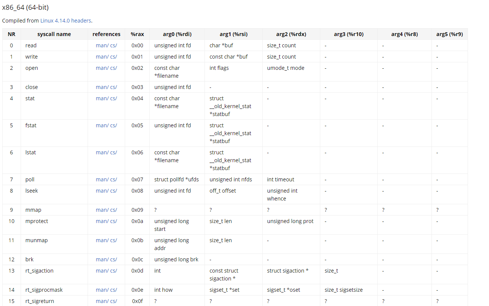

https://chromium.googlesource.com/chromiumos/docs/+/master/constants/syscalls.md
What is shellcoding?- Shellcoding is the process of generating code in order to redirect the programs registers
- How does one do this?
- System calls.
- Notice all the system calls in this graph have arguments
- These arguments are the values that certain registers hold
- an example lets say syscall 2 (open)
- the rdineeds to hold the filename (in little endian)
- the rsiis going to hold the path
- by pushing the path into rax, then putting the contents of rax inside the address of rsp, then moving the rsp(pointer) into rdi
- ESIwill represent what our permissions are (going for O_RDONLY)
- O_RDONLY = 0
- SO to get 0 inside esi, we can xor esi, esi
- ***xor'ing a register by itself zeros it out
https://chromium.googlesource.com/chromiumos/docs/+/master/constants/syscalls.md#arm-32_bit_EABI

So lets do an example (lets try and cat /etc/passwd)

So lets do a simple breakdown of what is going on.
Lets focus on the syscalls